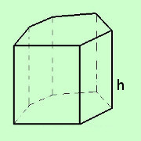
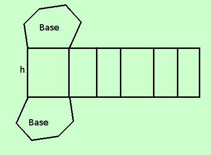
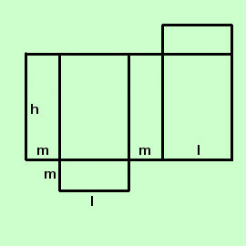
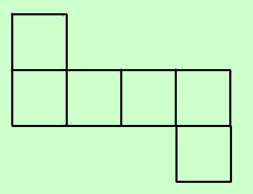
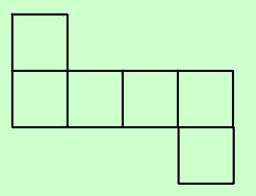

|
Cominciamo a parlare di superficie dei solidi: intenderemo intuitivamente come superficie di un solido quello che dovresti dipingere per colorare il solido stesso Distinguiamo i vari casi:   Consideriamo come primo esempio il prisma esagonale retto considerato nella pagina dei prismi e a destra sviluppiamone le superfici (cio' su cui andrebbe stesa la vernice) Otteniamo 2 superfici di base uguali: la base inferiore e la base superiore chiamiamo l'area di una delle due basi Asb Otteniamo inoltre un insieme di rettangoli tutti con la stessa altezza h il cui numero dipende dal tipo di prisma retto (il nostro e' un prisma retto esagonale e quindi avremo 6 rettangoli) Chiamiamo 2p il perimetro di base Al solito usiamo Perimetro = 2p perche' in molte formule ci servira' la meta' del perimetro ed in questo modo potremo semplificarne parecchie Chiamiamo area superficie laterale Asl la somma delle superfici dei rettangoli Per calcolare l'area dei rettangoli possiamo considerare il rettangolo totale formato dai vari rettangoli: tale rettangolo ha come misura di base il perimetro di base 2p e come altezza h, quindi possiamo scrivere
Se poi vogliamo calcolare l'area della superficie totale Ast dovremo sommare alla superficie laterale le aree delle due basi
Nel caso in cui il prisma retto sia regolare possiamo trovare l'area di base utilizzando il perimetro e l'apotema a, infatti tutti i poligoni regolari sono circoscrittibili, quindi, restando uguale la formula per la superficie laterale,avremo per la superficie totale
essendo a l'apotema del poligono regolare di base avremo che l'area di una base vale 2p·a/2 = p·a  Come ultimo caso consideriamo la formula della superficie totale per il parallelepipedo rettangolo: Chiamando l la lunghezza m la profondita' h l'altezza avremo
Naturalmente le formule del prisma retto valgono anche per il prisma regolare e per il parallelepipedo rettangolo: dipendentemente dai dati che hai sceglierai le formule che ti daranno la soluzione piu' semplicemente  

Consideriamo infine come caso particolare il cubo, cioe' il parallelepipedo con le 3 dimensioni uguali; a destra lo sviluppo della sua superficie Se chiamiamo l la misura dello spigolo, sostituendo l nella formula precedente ad m ed h avremo
come potevamo semplicemente trovare moltiplicando per 6 l'area di una faccia (quadrato) |

|

|

|

|